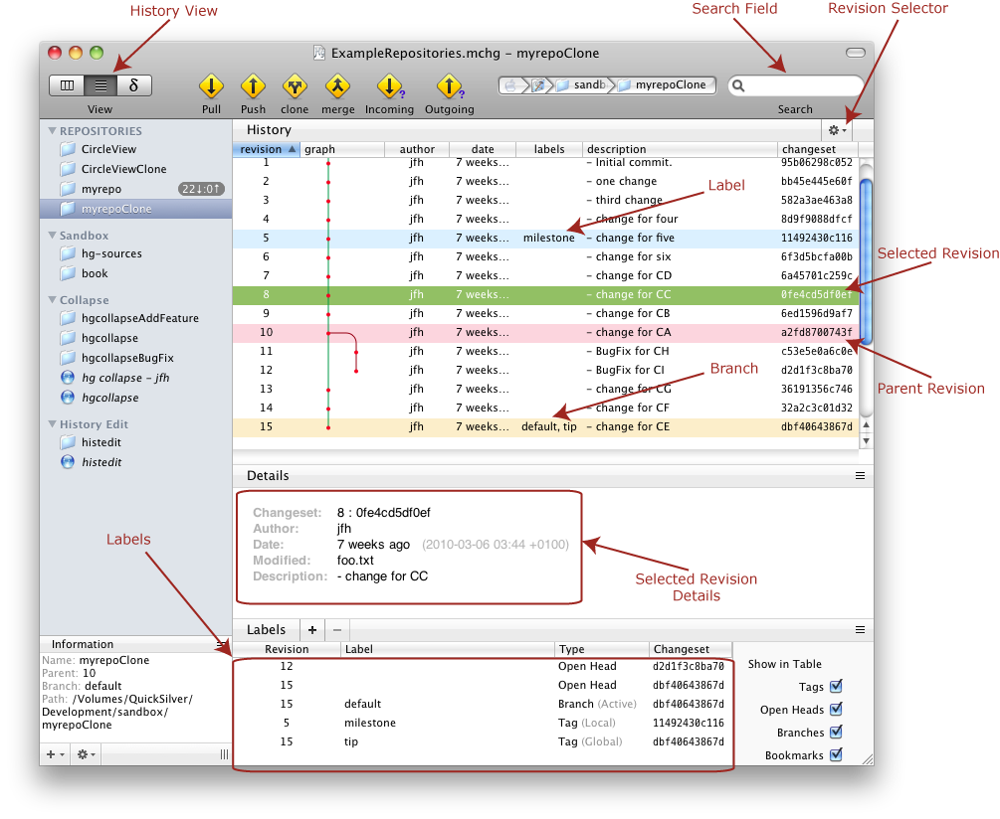

You can switch the view of the document to the History View through the View menu. In the History view you can inspect and interact with the historical revisions (changesets) which have been committed to the repository. A typical History view might be:

In the History view you can see the list of the logged changes. From this view most of the items from the Repository menu can be chosen, depending on what is selected: operations like push, pull, clone, incoming, outgoing, update, revert, merge, rewriting the history, etc.